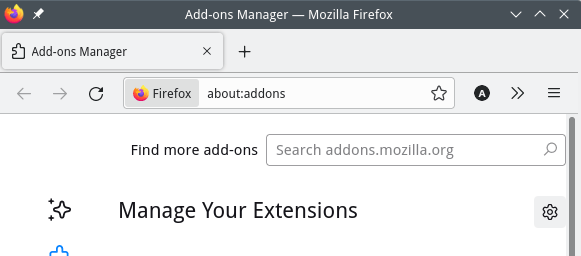
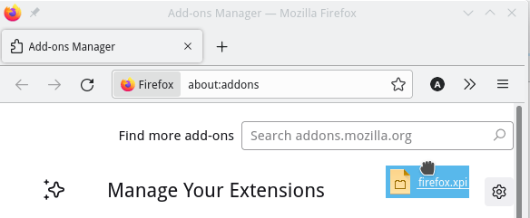
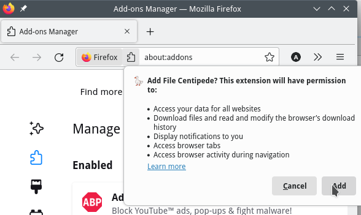
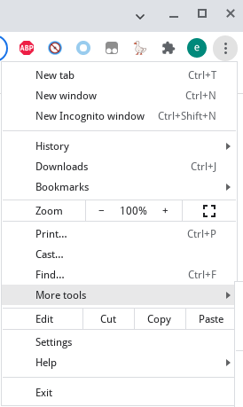
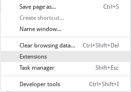
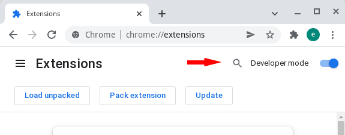
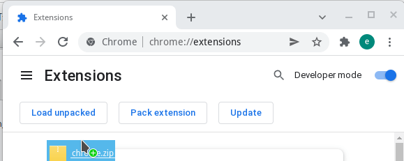
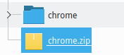
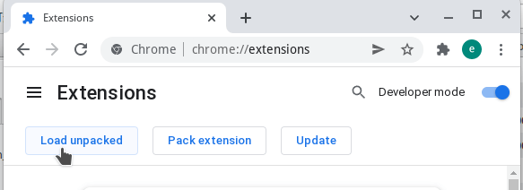

Как установить Расширение браузера
Это расширение браузера заменяет встроенный менеджер загрузок браузера и позволяет скачивать видео, аудио, изображения и любые другие типы файлов практически с любого сайта. Также отлично подходит для массового сбора веб-ресурсов в повседневной работе. Вы можете настроить пользовательские менеджеры загрузок или бэкенды для приёма загрузок и в любой момент одним кликом во всплывающем окне переключиться обратно на встроенный загрузчик браузера.


Как установить Firefox Расширение браузера
Открыть:
about:addons
Перетащить firefox.xpi Файл В


Как установить Chrome Расширение браузера
Открыть:
chrome://extensions/

Включить Режим разработчика

Перетащить chrome.crx Файл В

Или:
Распаковать chrome.zip
Загрузить распакованный
